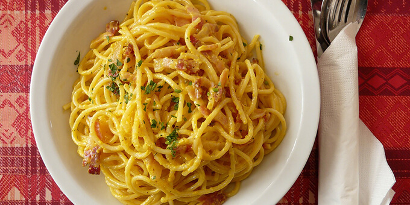

Ingrediente

Daca indragesti Italia si vrei sa aduci putin din farmecul ei chiar la tine acasa, atunci alege una dintre retetele care urmeaza si pune-ti talentele culinare la treaba. Nu trebuie sa fii bucatar profesionist ca sa obtii niste preparate delicioase. Trebuie doar sa alegi ingredientele potrivite si, cu putina inspiratie, sa urmaresti pasii modului de preparare. Alaturi de un vin alb bun si compania placuta a celor dragi poti transforma o cina banala intr-un adevarat festin italienesc. Buon appetito!
-
200 g spaghete
- 150 g parmezan
- 200 g bacon
- 2 oua intregi
- 1 galbenus
- sare si piper
Pasi de preparare
- Pune apa la fier
- Adauga pastele si fierbe-le
- Taie bacon-ul cubulete
- Caleste-l intr-o tigaine in care ai adaugat 3 linguri de ulei
- Separat, intr-un bol, bate cele 2 oua intregi si galbenusul, adauga parmezanul si amesteca totul bine pana cand compozitia se omogenizeaza perfect
- Pune sare, piper dupa gust si, in final, bucatile de bacon calite
- Folosind o lingura de lemn amesteca bine
- Acum sosul este gata si poti adauga peste el pastele deja fierte